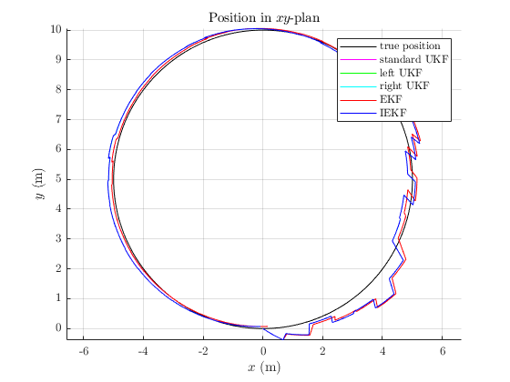

state_table = struct2table(true_state);
p = cell2mat(state_table.p')';
ukf_state_table = struct2table(ukf_states);
ukf_p = cell2mat(ukf_state_table.p')';
ukf_left_state_table = struct2table(ukf_left_states);
ukf_left_p = cell2mat(ukf_left_state_table.p')';
ukf_right_state_table = struct2table(ukf_right_states);
ukf_right_p = cell2mat(ukf_right_state_table.p')';
ekf_state_table = struct2table(ekf_states);
ekf_p = cell2mat(ekf_state_table.p')';
iekf_state_table = struct2table(iekf_states);
iekf_p = cell2mat(iekf_state_table.p')';
fig = figure;
hold on;
grid on;
title('Position in $xy$-plan','Interprete','latex')
xlabel('$x$ (m)','Interprete','latex')
ylabel('$y$ (m)','Interprete','latex')
plot(p(:, 1), p(:, 2), 'k');
plot(ukf_p(:, 1), ukf_p(:, 2), 'm');
plot(ukf_left_p(:, 1), ukf_left_p(:, 2), 'g');
plot(ukf_right_p(:, 1), ukf_right_p(:, 2), 'c');
plot(ekf_p(:, 1), ekf_p(:, 2), '');
plot(iekf_p(:, 1), iekf_p(:, 2), 'b');
axis equal;
legend('true position', 'standard UKF', 'left UKF', 'right UKF', 'EKF', 'IEKF');
print(fig, 'benchmark/html/benchmark_localization_01', '-dpng', '-r600')
ukf_err_rot = sprintf('%0.2f', sqrt(mean(ukf_err(1, :))/N));
ukf_left_err_rot = sprintf('%0.2f', sqrt(mean(ukf_left_err(1, :))/N));
ukf_right_err_rot = sprintf('%0.2f', sqrt(mean(ukf_right_err(1, :))/N));
ekf_err_rot = sprintf('%0.2f', sqrt(mean(ekf_err(1, :))/N));
iekf_err_rot = sprintf('%0.2f', sqrt(mean(iekf_err(1, :))/N));
ukf_err_p = sprintf('%0.2f', sqrt(mean(ukf_err(2, :))/N));
ukf_left_err_p = sprintf('%0.2f', sqrt(mean(ukf_left_err(2, :))/N));
ukf_right_err_p = sprintf('%0.2f', sqrt(mean(ukf_right_err(2, :))/N));
ekf_err_p = sprintf('%0.2f', sqrt(mean(ekf_err(2, :))/N));
iekf_err_p = sprintf('%0.2f', sqrt(mean(iekf_err(2, :))/N));
